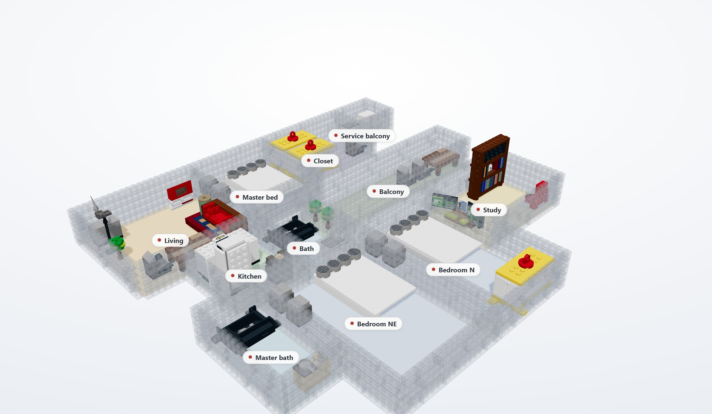

Read the plan
A floor plan or preset plus a one-sentence brief becomes a schema-checked scene IR: rooms, metric dimensions, object categories and counts, placement hints and topology.
vision model · cached in this demoCSCI4998 Final-Year Project · 2026
From a floor plan and one sentence
to buildable LEGO interiors
Department of Computer Science and Engineering
The Chinese University of Hong Kong
Supervised by Prof. Philip Fu

We present Plan2Brick, a system that turns a floor-plan image and one sentence of natural-language brief into a set of buildable LEGO interior scenes. A vision model reads rooms and dimensions into a schema-checked scene IR; a curated 42-object / 16-category library supplies the geometry; a deterministic solver selects parts, packs furniture against wall bands, and removes both intra-room and cross-room collisions; a LEGO wall builder lays five interlocking brick courses along every room boundary; the LDraw toolchain validates and renders every candidate.
On three real floor plans, all nine candidate scenes pass validation with zero cross-room overlaps: 236/264 object requests are placed, using 4,378 furniture parts plus 3,266 wall bricks in total. This page lets you inspect every candidate in 3D, switch the LEGO walls between ghost and solid to read the room layout, compare the three topology candidates, and download the .mpd scene and its BOM.
Pick a real floor plan and a candidate. Drag to orbit, scroll to zoom, and switch the LEGO walls between off, ghost and solid to read the plan.
Preparing parts…
The render strip is captured from the live 3D view, reconstructed from the same .mpd placements. Walls are ordinary LDraw bricks in that file and in the BOM; only the thin floor slabs are viewer geometry outside the part count.
One model call reads the plan. Everything after the scene IR is deterministic and free of tokens.
A floor plan or preset plus a one-sentence brief becomes a schema-checked scene IR: rooms, metric dimensions, object categories and counts, placement hints and topology.
vision model · cached in this demoA curated library of 42 objects across 16 categories, each with captions, specs and three-view QC. Text and shape queries retrieve a shortlist; a fit-aware scorer keeps only items that fit the room.
text + shape retrievalA deterministic solver assigns furniture to wall-band slots, checks depth and capacity per room, then runs a global exclusion pass. Three candidate topologies are generated for comparison.
zero tokens · zero collisionsEvery candidate goes through LDraw validation, an independent overlap recomputation, coverage accounting, three QC views and a BOM. The gate is green only when all checks pass.
9/9 candidates greenScene IR, brief parsing, library curation, retrieval, deterministic assembly, multi-candidate generation, single-object editing and evaluation.
The LDraw toolchain is an attributed reimplementation of ldraw-nova (AGPL-3.0). BrickNet supplies object models; LDraw supplies part geometry; LeoCAD renders and cross-checks BOMs.
Three real plans, three candidates each, one validation gate.
| Plan | Brief | Cand. | Rooms | Coverage | Parts | Overlaps | Gate |
|---|
Coverage misses are wall-band capacity drops, not validation failures. The solver reports both coverage and validity instead of treating 89.4% as 100%. ε counts sub-LDU float-noise notes ignored by the gate (threshold 1e-3 LDU); real modelling errors are ≥1 LDU.
Three synthetic plans A/B/C, dimension MAE 0.00 m. Real plans R1–R3 also pass with image and text inputs (6/6 green), separating readout error from solver error.
Two model tiers × with/without the library + IR scaffold × image/text × three complexities. The scaffold cuts model-side cost 3.5–6.5× and removes tool-level build failures (10 → 0).
All 42 items validate, all have QC renders, text self-retrieval is 42/42, shape self-retrieval is 42/42 (MRR 1.0), and 56/56 synonym queries return the right item at top-1.
42 items · 16 categories, curated from BrickNet, then validated and QC-rendered.
Every scene is assembled from this closed library. Category tokens keep the LLM's choices checkable; retrieval and geometry remain deterministic. Library thumbnails are LeoCAD QC renders.
What this page does and does not claim.
The live demo reads a verified M2 vision cache; the current backend is text-only. A live, vision-capable model is the next comparison arm, not a claim we make on this page.
The three candidates preserve the room program and dimensions but explore different adjacencies. They are design alternatives for comparison, not a metric reconstruction of the input plan.
Room boundaries are built from five interlocking courses of real LDraw bricks (1.2 m high, Light Bluish Gray 71), counted in every part total and BOM. The thin floor slabs are still viewer geometry outside the model, and there are no door or window openings yet.
LDraw validation, independent overlap checks, BOM and LeoCAD renders pass. physical_validity remains not_proven — no clutch-strength or full physics simulation is claimed.
If you reference this project page.
@misc{xiao2026plan2brick,
title = {Plan2Brick: From a Floor Plan and One Sentence
to Buildable LEGO Interiors},
author = {Xiao, Chuanyi},
year = {2026},
note = {CSCI4998 Final-Year Project,
The Chinese University of Hong Kong},
url = {https://xcy-pangloss.github.io/plan2brick/}
}
Project page built with three.js. Part geometry from the LDraw library via BrickNet GLBs. LDraw toolchain and LeoCAD for validation and renders. ldraw-nova is an AGPL-3.0 upstream; our LDraw layer is an attributed reimplementation.